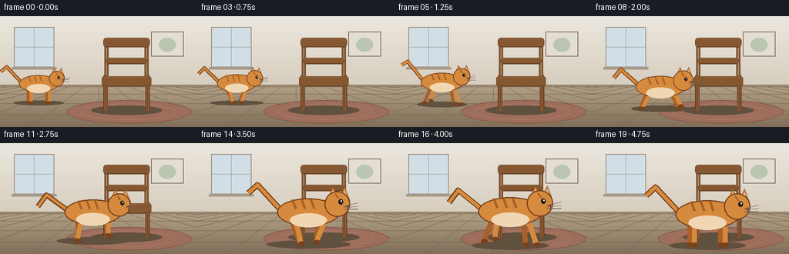
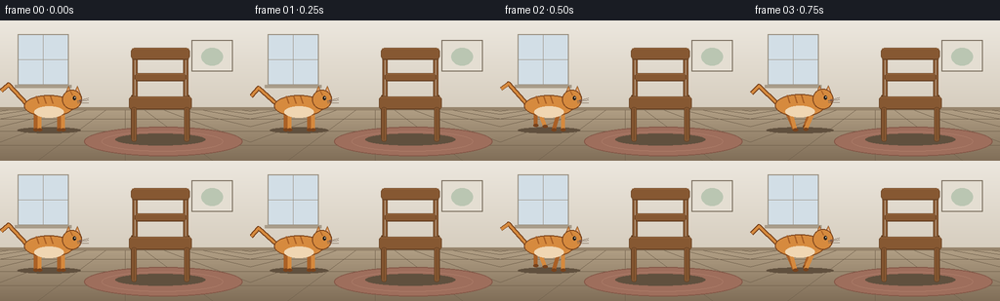
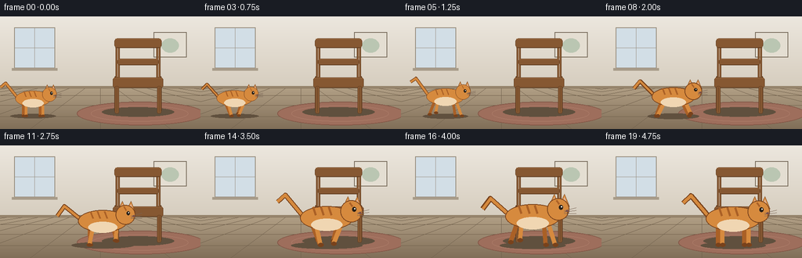
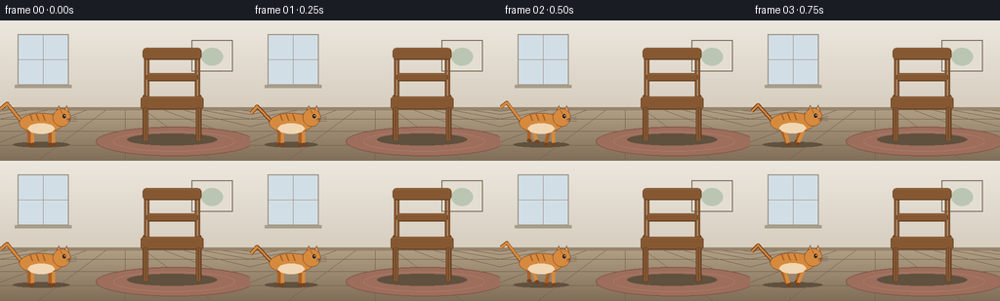

CODING AGENTS AS PIXEL WORLD MODELS
traex/Seed-2.1-Pro-0915 · dynamic_spatial_relationship_0006
点击播放 · 原生 RGB 像素
逐轮保存的候选
回放视频、检查图与代码变化。
每份候选均可单独播放。实际图片检查记录在下方工具轨迹中。
候选 01播放与检查图
点击播放 · 原生 RGB 像素


展开代码变化
--- 上一保存版本
+++ 本次保存版本
@@ -0,0 +1,307 @@
+"""Procedural text-to-video generator.
+
+Scene: a cat sits on the left of a chair, then runs to the front of the chair.
+Renders 20 RGB frames (256x144 @ 4fps) with PIL at 2x supersampling.
+"""
+import math
+from pathlib import Path
+
+import numpy as np
+from PIL import Image, ImageDraw
+
+import artifact_io
+
+CASE_DIR = Path(__file__).parent
+W, H, N, FPS = 256, 144, 20, 4.0
+SS = 2 # supersampling factor
+
+
+# --------------------------------------------------------------------------- #
+# Background
+# --------------------------------------------------------------------------- #
+def make_background():
+ """Wall + floor room, drawn once at supersampled resolution."""
+ w, h = W * SS, H * SS
+ img = Image.new("RGB", (w, h))
+ px = img.load()
+
+ horizon = int(92 * SS)
+ top = np.array([236, 231, 222], dtype=np.float32)
+ bot = np.array([214, 205, 190], dtype=np.float32)
+ floor_top = np.array([176, 158, 132], dtype=np.float32)
+ floor_bot = np.array([128, 110, 88], dtype=np.float32)
+
+ for y in range(h):
+ if y < horizon:
+ f = y / horizon
+ c = tuple((top + (bot - top) * f).astype(np.uint8))
+ else:
+ f = (y - horizon) / (h - horizon)
+ c = tuple((floor_top + (floor_bot - floor_top) * f).astype(np.uint8))
+ for x in range(w):
+ px[x, y] = c
+
+ d = ImageDraw.Draw(img)
+
+ # Soft window with light on the wall.
+ wl, wt, wr, wb = int(18 * SS), int(14 * SS), int(70 * SS), int(66 * SS)
+ d.rectangle([wl, wt, wr, wb], fill=(210, 222, 230), outline=(150, 140, 124), width=SS)
+ d.line([(wl + wr) // 2, wt, (wl + wr) // 2, wb], fill=(150, 140, 124), width=max(1, SS // 2))
+ d.line([wl, (wt + wb) // 2, wr, (wt + wb) // 2], fill=(150, 140, 124), width=max(1, SS // 2))
+ d.rectangle([wl - 3 * SS, wb, wr + 3 * SS, wb + 3 * SS], fill=(168, 156, 138))
+
+ # Small framed picture.
+ d.rectangle([int(196 * SS), int(20 * SS), int(238 * SS), int(52 * SS)],
+ fill=(228, 222, 210), outline=(120, 108, 92), width=SS)
+ d.ellipse([int(206 * SS), int(28 * SS), int(228 * SS), int(46 * SS)],
+ fill=(186, 198, 178))
+
+ # Baseboard.
+ d.rectangle([0, horizon - 3 * SS, w, horizon], fill=(150, 132, 108))
+
+ # Floor plank lines with mild perspective.
+ for k in range(-6, 7):
+ x_top = w // 2 + k * 20 * SS
+ d.line([(x_top, horizon), (w // 2 + k * 90 * SS, h)],
+ fill=(112, 96, 76), width=max(1, SS // 3))
+ for fy in (0.18, 0.42, 0.7):
+ y = int(horizon + (h - horizon) * fy)
+ d.line([(0, y), (w, y)], fill=(112, 96, 76), width=max(1, SS // 3))
+
+ # Elliptical rug in front of where the chair sits.
+ rug_cx, rug_cy = int(164 * SS), int(124 * SS)
+ d.ellipse([rug_cx - int(78 * SS), rug_cy - int(15 * SS),
+ rug_cx + int(84 * SS), rug_cy + int(15 * SS)],
+ fill=(158, 110, 92))
+ d.ellipse([rug_cx - int(78 * SS), rug_cy - int(15 * SS),
+ rug_cx + int(84 * SS), rug_cy + int(15 * SS)],
+ outline=(132, 88, 72), width=SS)
+ d.ellipse([rug_cx - int(60 * SS), rug_cy - int(10 * SS),
+ rug_cx + int(64 * SS), rug_cy + int(10 * SS)],
+ outline=(176, 128, 108), width=max(1, SS // 2))
+ return img
+
+
+# --------------------------------------------------------------------------- #
+# Chair
+# --------------------------------------------------------------------------- #
+WOOD = (134, 88, 50)
+WOOD_DARK = (96, 60, 32)
+WOOD_LIGHT = (168, 116, 70)
+
+
+def _wood_rect(d, box, radius=0):
+ """Wooden plank with a top highlight and a bottom shade."""
+ if radius:
+ d.rounded_rectangle(box, radius=radius, fill=WOOD, outline=WOOD_DARK,
+ width=max(1, SS // 2))
+ else:
+ d.rectangle(box, fill=WOOD, outline=WOOD_DARK, width=max(1, SS // 2))
+ x0, y0, x1, y1 = box
+ d.line([x0 + SS, y0 + SS // 2, x1 - SS, y0 + SS // 2],
+ fill=WOOD_LIGHT, width=max(1, SS // 2))
+ d.line([x0 + SS, y1 - SS // 2, x1 - SS, y1 - SS // 2],
+ fill=WOOD_DARK, width=max(1, SS // 2))
+
+
+def draw_chair(img):
+ """Front-facing wooden chair centered around x=164."""
+ d = ImageDraw.Draw(img)
+ cx = 164 * SS
+
+ # Grounded shadow.
+ d.ellipse([cx - int(46 * SS), int(116 * SS), cx + int(46 * SS), int(128 * SS)],
+ fill=(96, 80, 62))
+
+ seat_l, seat_r = cx - int(32 * SS), cx + int(32 * SS)
+ seat_t, seat_b = int(78 * SS), int(91 * SS)
+ floor_y = int(122 * SS)
+
+ # Rear legs (behind seat).
+ for rx in (seat_l + int(4 * SS), seat_r - int(4 * SS)):
+ d.rounded_rectangle([rx - int(2.2 * SS), seat_t - 2 * SS,
+ rx + int(2.2 * SS), floor_y],
+ radius=2 * SS, fill=WOOD_DARK)
+
+ # Back posts.
+ for rx in (seat_l + int(6 * SS), seat_r - int(6 * SS)):
+ d.rounded_rectangle([rx - int(2.6 * SS), int(30 * SS),
+ rx + int(2.6 * SS), seat_b],
+ radius=2 * SS, fill=WOOD, outline=WOOD_DARK,
+ width=max(1, SS // 3))
+
+ # Top rail and middle slat.
+ _wood_rect(d, [seat_l + int(2 * SS), int(28 * SS),
+ seat_r - int(2 * SS), int(40 * SS)], radius=4 * SS)
+ _wood_rect(d, [seat_l + int(6 * SS), int(54 * SS),
+ seat_r - int(6 * SS), int(62 * SS)], radius=3 * SS)
+
+ # Seat.
+ _wood_rect(d, [seat_l, seat_t, seat_r, seat_b], radius=3 * SS)
+
+ # Front legs (in front of seat); partly hidden by the cat at the end.
+ for rx in (seat_l + int(5 * SS), seat_r - int(5 * SS)):
+ d.rounded_rectangle([rx - int(2.8 * SS), seat_b - 2 * SS,
+ rx + int(2.8 * SS), floor_y + int(2 * SS)],
+ radius=2 * SS, fill=WOOD, outline=WOOD_DARK,
+ width=max(1, SS // 3))
+
+
+# --------------------------------------------------------------------------- #
+# Cat
+# --------------------------------------------------------------------------- #
+CAT_FUR = (214, 138, 62)
+CAT_FUR_DARK = (170, 96, 38)
+CAT_CREAM = (240, 214, 178)
+CAT_LINE = (120, 66, 28)
+
+
+def draw_cat(img, gx, gy, s, run_phase, moving, facing=1):
+ """Side-profile cat. (gx, gy) is the ground point under the body center."""
+ S = SS * s
+ d = ImageDraw.Draw(img)
+
+ bob = (2.5 * S if moving else 0.4 * S) * math.sin(run_phase * 2)
+ body_cy = gy - int(26 * S) + int(bob)
+ body_cx = gx
+
+ bw, bh = int(27 * S), int(12 * S)
+ leg_hip_y = body_cy + int(6 * S)
+ foot_y = gy
+
+ # Shadow.
+ sh_w = int(34 * S * (1 + 0.06 * math.sin(run_phase)))
+ d.ellipse([gx - sh_w, gy - int(3 * S), gx + sh_w, gy + int(4 * S)],
+ fill=(96, 80, 62))
+
+ # Tail (behind body), swishing.
+ tail_swing = (0.55 if moving else 0.18) * math.sin(run_phase * 1.5 + 0.6)
+ tx0 = body_cx - int(facing * 24 * S)
+ ty0 = body_cy - int(2 * S)
+ tx1 = tx0 - int(facing * 20 * S)
+ ty1 = ty0 - int((20 + 10 * tail_swing) * S)
+ tx2 = tx1 - int(facing * 8 * S)
+ ty2 = ty1 + int((8 - 6 * tail_swing) * S)
+ d.line([(tx0, ty0), (tx1, ty1), (tx2, ty2)], fill=CAT_LINE,
+ width=max(2, int(5 * S)), joint="curve")
+ d.line([(tx0, ty0), (tx1, ty1), (tx2, ty2)], fill=CAT_FUR,
+ width=max(1, int(3.2 * S)), joint="curve")
+
+ # Legs: rear pair then front pair, far legs darker.
+ amp = 9 * S if moving else 0.0
+ leg_specs = [
+ (-15 * S, run_phase, CAT_FUR_DARK),
+ (-11 * S, run_phase + 0.7, CAT_FUR),
+ (11 * S, run_phase + math.pi + 0.7, CAT_FUR_DARK),
+ (15 * S, run_phase + math.pi, CAT_FUR),
+ ]
+ for off, ph, col in leg_specs:
+ hip_x = body_cx + int(facing * off)
+ swing = amp * math.sin(ph)
+ lift = max(0.0, math.sin(ph + math.pi / 2)) * (5 * S if moving else 0)
+ foot_x = hip_x + int(facing * swing)
+ fy = foot_y - int(lift)
+ d.line([(hip_x, leg_hip_y), (foot_x, fy)], fill=col,
+ width=max(2, int(4.4 * S)))
+ d.ellipse([foot_x - int(2.6 * S), fy - int(2 * S),
+ foot_x + int(3.4 * S), fy + int(2 * S)], fill=CAT_LINE)
+
+ # Body.
+ d.ellipse([body_cx - bw, body_cy - bh, body_cx + bw, body_cy + bh],
+ fill=CAT_FUR, outline=CAT_LINE, width=max(1, int(1.1 * S)))
+ # Cream belly.
+ d.ellipse([body_cx - int(16 * S), body_cy + int(1 * S),
+ body_cx + int(16 * S), body_cy + int(13 * S)], fill=CAT_CREAM)
+
+ # Back stripes.
+ for bx in (-14, -6, 2):
+ x = body_cx + int(facing * bx * S)
+ d.line([(x, body_cy - int(11 * S)),
+ (x + int(facing * 3 * S), body_cy - int(3 * S))],
+ fill=CAT_FUR_DARK, width=max(1, int(2 * S)))
+
+ # Head.
+ head_r = int(11 * S)
+ hx = body_cx + int(facing * 25 * S)
+ hy = body_cy - int(7 * S)
+ ear = int(7 * S)
+ for sgn in (-1, 1):
+ ex = hx + int(facing * sgn * 5 * S)
+ d.polygon([(ex - int(facing * ear * 0.6), hy - int(4 * S)),
+ (ex + int(facing * ear * 0.2), hy - int(15 * S)),
+ (ex + int(facing * ear * 0.9), hy - int(3 * S))],
+ fill=CAT_FUR, outline=CAT_LINE)
+ d.polygon([(ex - int(facing * ear * 0.2), hy - int(6 * S)),
+ (ex + int(facing * ear * 0.2), hy - int(12 * S)),
+ (ex + int(facing * ear * 0.5), hy - int(6 * S))],
+ fill=(226, 178, 150))
+ d.ellipse([hx - head_r, hy - head_r, hx + head_r, hy + head_r],
+ fill=CAT_FUR, outline=CAT_LINE, width=max(1, int(1.1 * S)))
+
+ # Eye.
+ eye_x = hx + int(facing * 3 * S)
+ eye_y = hy - int(2 * S)
+ d.ellipse([eye_x - int(2 * S), eye_y - int(2.4 * S),
+ eye_x + int(2 * S), eye_y + int(2.4 * S)], fill=(40, 32, 24))
+ d.ellipse([eye_x, eye_y - int(1.4 * S),
+ eye_x + int(1.2 * S), eye_y], fill=(250, 246, 236))
+ # Nose.
+ nose_x = hx + int(facing * 9 * S)
+ nose_y = hy + int(2 * S)
+ d.polygon([(nose_x, nose_y - int(1.6 * S)),
+ (nose_x - int(2 * S), nose_y + int(0.6 * S)),
+ (nose_x + int(2 * S), nose_y + int(0.6 * S))], fill=(120, 70, 70))
+ # Mouth and whiskers.
+ d.line([(nose_x, nose_y + int(S)), (nose_x, nose_y + int(3.5 * S))],
+ fill=CAT_LINE, width=max(1, int(0.8 * S)))
+ for wy in (-1, 0, 1):
+ y0 = nose_y + int((wy * 1.5 + 1) * S)
+ d.line([(hx + int(facing * 6 * S), y0),
+ (hx + int(facing * 18 * S), y0 + int((wy - 1) * 1.6 * S))],
+ fill=(120, 100, 84), width=max(1, int(0.7 * S)))
+ # Head stripe.
+ d.line([(hx - int(facing * 2 * S), hy - int(9 * S)),
+ (hx + int(facing * S), hy - int(5 * S))],
+ fill=CAT_FUR_DARK, width=max(1, int(1.6 * S)))
+
+
+# --------------------------------------------------------------------------- #
+# Animation
+# --------------------------------------------------------------------------- #
+def motion(i):
+ """Return (progress 0..1, moving bool, run phase in radians)."""
+ if i <= 1:
+ p = 0.0
+ elif i >= 17:
+ p = 1.0
+ else:
+ u = (i - 2) / 14.0
+ p = u * u * (3 - 2 * u)
+ moving = 1 < i < 17
+ phase = (i - 2) * (2 * math.pi * 1.1 / FPS)
+ return p, moving, phase
+
+
+def render_frame(bg, i):
+ img = bg.copy()
+ draw_chair(img)
+
+ p, moving, phase = motion(i)
+ # From the left of the chair to directly in front of it.
+ gx = int((50 + (150 - 50) * p) * SS)
+ gy = int((112 + (132 - 112) * p) * SS)
+ scale = 0.95 + 0.6 * p
+ draw_cat(img, gx, gy, scale, phase, moving, facing=1)
+
+ return np.asarray(img.resize((W, H), Image.Resampling.LANCZOS), dtype=np.uint8)
+
+
+def main():
+ bg = make_background()
+ frames = np.stack([render_frame(bg, i) for i in range(N)], axis=0)
+ artifact_io.save(frames, CASE_DIR)
+ print(f"Saved {frames.shape} frames to {CASE_DIR}")
+
+
+if __name__ == "__main__":
+ main()
候选 02播放与检查图
点击播放 · 原生 RGB 像素


展开代码变化
--- 上一保存版本
+++ 本次保存版本
@@ -69,7 +69,7 @@
d.line([(0, y), (w, y)], fill=(112, 96, 76), width=max(1, SS // 3))
# Elliptical rug in front of where the chair sits.
- rug_cx, rug_cy = int(164 * SS), int(124 * SS)
+ rug_cx, rug_cy = int(176 * SS), int(124 * SS)
d.ellipse([rug_cx - int(78 * SS), rug_cy - int(15 * SS),
rug_cx + int(84 * SS), rug_cy + int(15 * SS)],
fill=(158, 110, 92))
@@ -105,9 +105,9 @@
def draw_chair(img):
- """Front-facing wooden chair centered around x=164."""
+ """Front-facing wooden chair centered around x=176 (supersampled units)."""
d = ImageDraw.Draw(img)
- cx = 164 * SS
+ cx = 176 * SS
# Grounded shadow.
d.ellipse([cx - int(46 * SS), int(116 * SS), cx + int(46 * SS), int(128 * SS)],
@@ -178,7 +178,7 @@
tail_swing = (0.55 if moving else 0.18) * math.sin(run_phase * 1.5 + 0.6)
tx0 = body_cx - int(facing * 24 * S)
ty0 = body_cy - int(2 * S)
- tx1 = tx0 - int(facing * 20 * S)
+ tx1 = tx0 - int(facing * 18 * S)
ty1 = ty0 - int((20 + 10 * tail_swing) * S)
tx2 = tx1 - int(facing * 8 * S)
ty2 = ty1 + int((8 - 6 * tail_swing) * S)
@@ -288,9 +288,9 @@
p, moving, phase = motion(i)
# From the left of the chair to directly in front of it.
- gx = int((50 + (150 - 50) * p) * SS)
- gy = int((112 + (132 - 112) * p) * SS)
- scale = 0.95 + 0.6 * p
+ gx = int((42 + (168 - 42) * p) * SS)
+ gy = int(127 * SS)
+ scale = 0.85 + 0.45 * p
draw_cat(img, gx, gy, scale, phase, moving, facing=1)
return np.asarray(img.resize((W, H), Image.Resampling.LANCZOS), dtype=np.uint8)
可观测工具轨迹
实际执行的命令与返回图片。
命令 1exit 0
/bin/bash -lc 'cat prompt.txt; echo "====RULES===="; cat GENERATION_RULES.md; echo "====SPEC===="; cat task_spec.json; echo "====LS===="; ls -la'
命令 2exit 0
/bin/bash -lc 'cat artifact_io.py'
命令 3exit 0
/bin/bash -lc 'cd "$(pwd)" && python generate.py && ls -la frames | head -25'
命令 4exit 0
/bin/bash -lc "python generate.py && python - <<'EOF'
import numpy as np
from PIL import Image
import os
# load packed output to verify shape and frame-to-frame motion
data = np.load(\"pixels.npz\")[\"pixels\"]
print(\"packed tensor:\", data.shape, data.dtype)
frames = []
for i in range(20):
p = data[:, :, i].astype(np.uint32)
rgb = np.stack([(p >> 16) & 255, (p >> 8) & 255, p & 255], axis=-1).astype(np.uint8)
frames.append(rgb)
frames = np.stack(frames)
print(\"frames:\", frames.shape, frames.dtype, \"range\", frames.min(), frames.max())
diffs = [int(np.abs(frames[i].astype(int) - frames[i-1].astype(int)).sum()) for i in range(1, 20)]
print(\"mean per-frame diff:\", sum(diffs)//len(diffs), \"min/max:\", min(diffs), max(diffs))
# locate the orange cat centroid per frame to confirm left-to-front motion
mask = (frames[:,:,:,0] > 150) & (frames[:,:,:,1] > 80) & (frames[:,:,:,1] < 180) & (frames[:,:,:,2] < 110)
for i in [0, 1, 5, 10, 15, 16, 17, 19]:
ys, xs = np.nonzero(mask[i])
print(f\"frame {i:02d}: cat pixels={len(xs)}, centroid x={xs.mean():.1f}, x span=({xs.min()},{xs.max()}), y span=({ys.min()},{ys.max()})\")
print(\"artifacts:\", sorted(f for f in os.listdir(\".\") if f.endswith((\".npz\",\".html\",\".png\"))))
EOF"保存候选 2 份；完成命令 4 次；可验证图片返回 0 张。原始 API 响应与完整日志保留在本地。